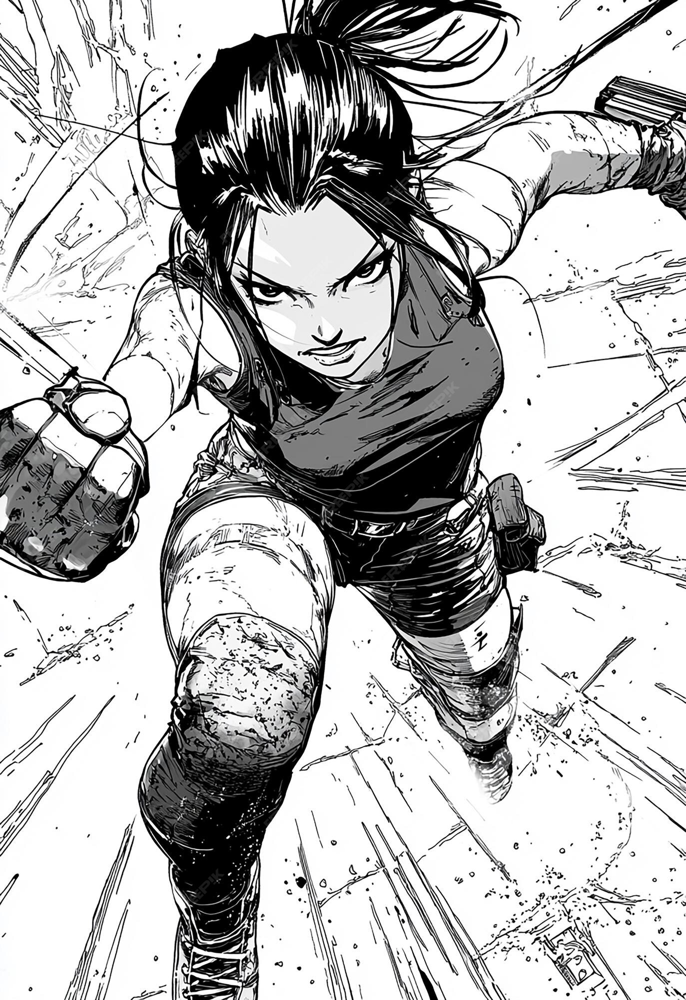
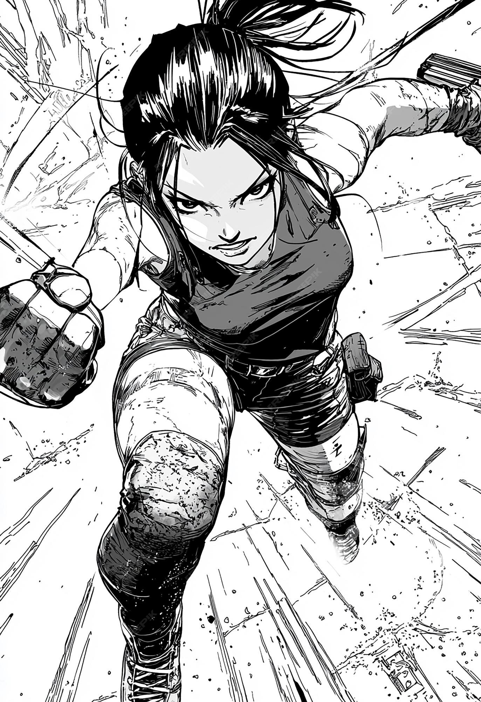
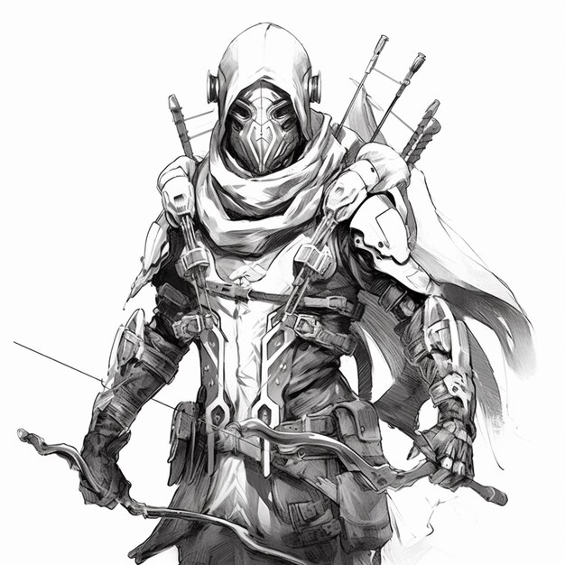
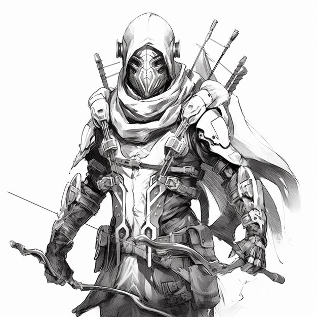

A lost soul of an old warrior
Once a hero, the warrior now wanders forgotten lands, haunted by echoes of past battles. Bound by honor, lost in time, he searches for meaning amid ruins, memories, and silence. Shadows whisper tales of glory and grief, as he walks the path of fate alone.
 

The freedom we strive for
Through struggle and sacrifice, we chase the dream of freedom—an unyielding hope burning within every soul. Across boundaries and battles, voices rise for justice, dignity, and peace. It’s not merely a right, but a journey of courage and unity, shaping a world where every heart beats without fear.
 

How loneliness affects our senses
Loneliness distorts perception—sounds echo longer, silence grows heavier, and colors lose their warmth. The mind amplifies touch and scent, craving connection. In solitude, our senses sharpen yet ache, revealing how deeply we rely on presence. It’s not just emotion—it’s a physical, tangible shift in how we experience the world.
Step in evolution total supremacy
A new era begins—where evolution surpasses biology and supremacy is forged through intellect, adaptation, and design. No longer bound by limits of flesh, we ascend into dominance shaped by choice and technology. This step is not survival, but mastery—the defining moment when humanity takes control of its own destiny.